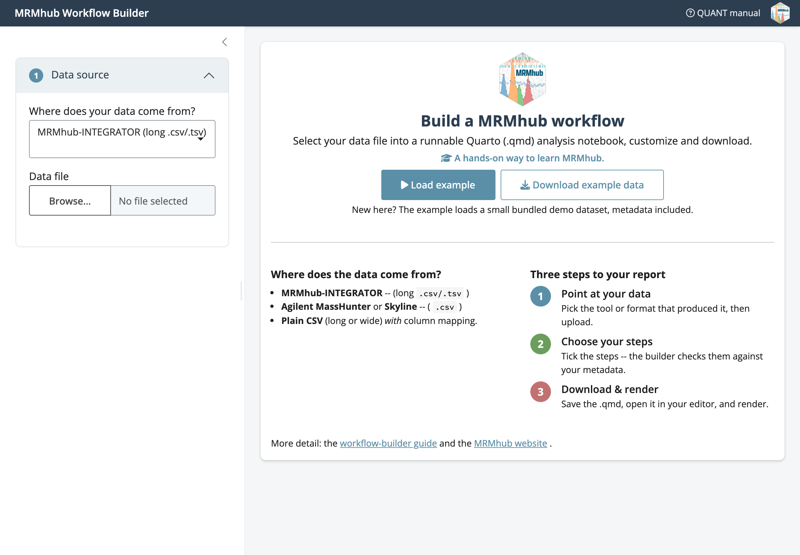

Using the interactive workflow builder
Source:vignettes/articles/tutorial-12-workflow-builder.Rmd
tutorial-12-workflow-builder.Rmdbuild_workflow() opens a point-and-click app that turns
a data file and its metadata into a runnable Quarto (.qmd)
workflow. You fill in the sidebar, the app checks your inputs, and it
writes the same script you would otherwise type by hand. It is meant for
getting started with and learning MRMhub; for a production pipeline,
script the steps yourself, using the generated .qmd as a
starting point.
New to R? The builder runs from R, so you need R and an editor (RStudio or Positron) installed. If you have never used R, start with Getting started with R and Quarto – it covers installing R, using the console, and installing MRMhub.

Steps
Install MRMhub, if you have not already, by following the installation guide. You only need to do this once.
-
Launch the builder from the Console in RStudio or Positron. Type one line and press Enter:
mrmhub::build_workflow()The app opens in your browser on a welcome screen. To try it with no files of your own, click Load example, or Download example data to save the demo file first.

The welcome screen: pick where your data comes from, or click Load example to load the bundled demo dataset (metadata included). In the Data source panel, pick the tool or format that produced your data (MRMhub-INTEGRATOR, MassHunter, Skyline, or a generic CSV) and upload the file. For a generic CSV, use Configure columns to map them.
In Metadata, choose where sample, feature, and ISTD annotations come from: embedded in the data file, an MSOrganiser workbook, or a Metadata tables workbook. For the latter two, upload the
.xlsx; the builder accepts it leniently, suppressing import warnings by default.Under Processing steps, tick the steps to include. A greyed-out step explains, via its tooltip, what metadata it still needs — quantification by internal standard, for instance, stays off until ISTD concentrations are imported. Drift correction uses a QC type found in your data; if none is present, the step is written commented-out with a hint.
Under Report format, choose HTML, Word, or PDF for the rendered report.
Watch the status banner. A green banner, with the render command, means the workflow will run; amber flags something still missing; red appears only when the data file itself cannot be read. The Home button beside it starts over. The generated
.qmdis always shown, whatever the banner’s colour.-
Click Download .qmd, make a
data/folder next to it, copy your data (and any metadata) file into that folder, then render:
The result is an ordinary Quarto document. Open it in RStudio, Positron, or VS Code, tweak paths or steps, and run the chunks yourself.
Next steps
- Getting started with MRMhub: the same workflow written by hand
- Lipidomics workflow: the full pipeline the builder mirrors
- Quarto workflows: rendering to HTML, PDF, and Word